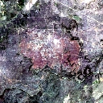

Spectral–Spatial
Interpretation.
Which spectral channels matter
and where do they matter?

A model sees six bands.
What produced its burn-scar score?
Spectral alone tells us which.
Neither tells us which band matters where.
The score being explained
This is an HLS Burn Scars segmentation image with six bands, Blue, Green, Red, NIR, SWIR1 and SWIR2. The trained U-Net produces burn-class logits. The explanation target is the mean logit over 2,734 pixels in the fixed ground-truth burn region.
The ground-truth mask is used to define the scalar score; it is not an input channel to the U-Net. This is a single illustrative example, not an independent localization evaluation.
Keep the surroundings.
Change only one cell.
255 cells remain observed.
Observed context
For spatial cell g, keep all 255 other cells at their observed values. Change only the six channels in g, using the per-channel mean baseline when masking. The unmasked score is 1.206524. For each chosen location, the displayed masked score is obtained by subtracting that cell's exact contextual contrast, which equals the sum of its six sampled-Shapley contributions within numerical precision.
Cells A, B and C are real positions in HLS sample_0163. The numerical scores are based on the published JSON output of the original browser computation. Individual intermediate coalition scores are not displayed, because they were not saved.
Restore bands in different orders.
Average each band’s marginal effect.
Conditional Shapley estimation
For any subset R of the six channels in the selected cell, all other cells remain observed. The six local channels start at their mean baselines. The algorithm restores them in five sampled permutations. At each addition, it records the model score difference. Averaging the marginal change for channel c across those five orders gives Phi(g,c).
Order sequences here are reproduced exactly from the seed-0 xorshift32/Fisher–Yates sampler in docs/playground/compute-runtime.js, following its row-major traversal. The local attribution bars are read from the saved result.json; individual per-step logit differences are intentionally not fabricated.
One position gives six numbers.
Repeat across the image.
One matrix, not two explainers
The joint attribution Phi(g,c) is a 16×16×6 tensor for this run: 256 locations and six channels. A row gives the six within-cell Shapley contributions. Fixing a channel shows how its contribution varies across locations.
Every small map here comes directly from the real 1,536-element attribution tensor, with one common diverging signed color scale. The thin colored band markers encode channel identity; red and teal within each map encode positive and negative attribution, separately from band identity.
Sum across bands for where.
Across locations for which.

Exact aggregation of the same tensor
Spatial: S(g) = sum over c of Phi(g,c). Spectral: T(c) = sum over g of Phi(g,c). The six per-channel spatial maps are the fixed-channel slices of the same tensor.
Local efficiency is exact within each spatial cell: S(g) = f(x) - f(x with all channels of g masked). However, summing S(g) over cells need not recover the global score f(x) or a whole-image baseline contrast. For this run the sum across cells/channels is 0.874582, while the full target logit is 1.206524.
Channel contributions can be spatially different.
The paper tests whether joint rankings help.
Both positive in the global total.
Different patterns across this image.
SSI has the best reported mean across all three paper metrics on these datasets.
What the evidence supports
For the single HLS sample, the SWIR1 and SWIR2 signed spatial maps have Pearson correlation −0.5318 even though each band has a positive global total. At cell A, SWIR2 is +0.0730 while SWIR1 is −0.0313. These are observations for a fixed score target, not a general theorem about burn spectroscopy.
Separately, the paper reports the best mean among compared methods on joint deletion, rank-1 deletion and insertion for CUB-200, EuroSAT and HLS Burn Scars with mean and zero baselines. The displayed joint-deletion values are from the mean-baseline Table 1, not the training-split sample shown earlier.